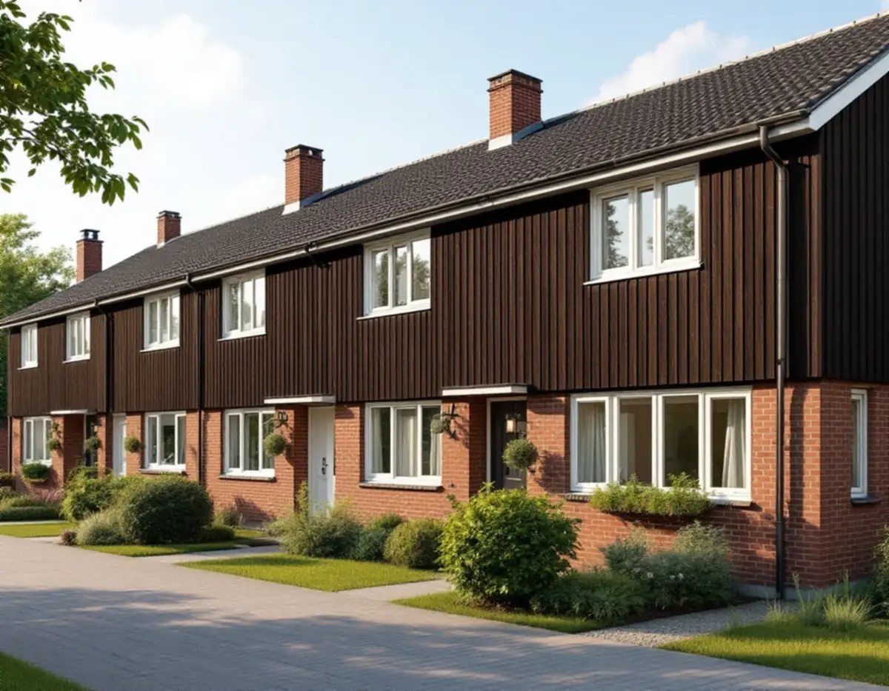
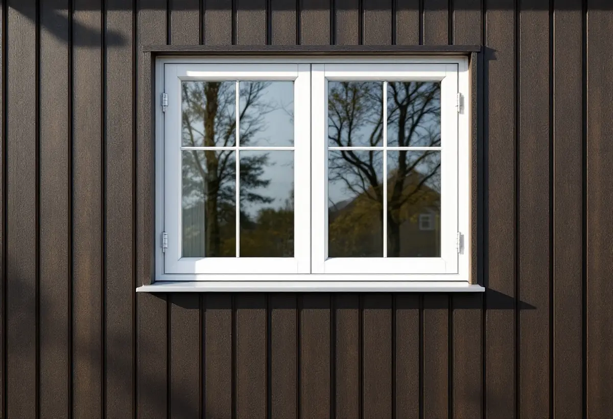
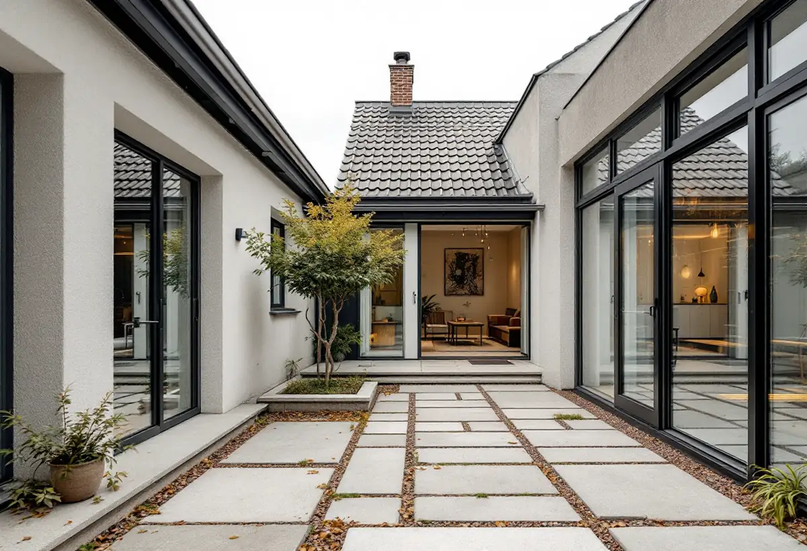

Platsbesök
Gratis besök där vi mäter karmar och bågar.

Kista byggdes ut mellan 1975 och 1980, och i småhusen sitter i många fall fortfarande de fönster som monterades när husen var nya.
Beskriv jobbet kort.
Något blev fel. Kontrollera uppgifterna eller ring 08 12 410 276.
Vi tittar på jobbet på plats innan du får offert.
Du ser vad som ingår och vad det kostar.
Vi drar av ROT direkt och sköter ansökan.
Geal Entreprenad AB, Bromma. Org.nr 559303-7566.

Geal Entreprenad AB byter fönster i radhus, kedjehus och villor i Kista och Akalla och hjälper till att reda ut vem som ska beställa när huset ägs av en förening.
Stadsmuseets Stockholms spår om Kista berättar att stadsdelen ligger på det gamla militära övningsområdet Järvafältet. Staden köpte marken 1966 och byggde ut Kista åren 1975–1980. Staden tillämpade betydligt friare former för den arkitektoniska utformningen här än i de andra stadsdelarna på Järvafältet. Bebyggelsen beskrivs som 2 500 lägenheter i flerbostadshus och omkring 780 småhus.
Är fönstren original har de alltså suttit i snart femtio år. Bågar, beslag och tätningar från den tiden kan vara slitna även om karmen är frisk, och då är det värt att jämföra ett byte med en fönsterrenovering i Kista innan du bestämmer dig. Vi går igenom båda vägarna på platsbesöket och visar var bågarna är slitna.

Stadens områdesfakta för 2025 räknar 971 småhus i Kista. 482 av dem ägs med äganderätt och 404 är bostadsrätter. I grannstadsdelen Akalla finns 671 småhus, där 493 är bostadsrätter och 170 har äganderätt. I de två stadsdelarna tillsammans är alltså ungefär vartannat småhus en bostadsrätt, där ägaren inte äger själva huset.
Bostadsrättslagen säger att bostadsrättshavaren håller lägenheten i gott skick om inte något annat bestämts i stadgarna. Därför är det stadgarna som avgör om fönstren är ditt eller föreningens ansvar. Ligger ansvaret på föreningen kan den välja att byta i en hel husgrupp på en gång. Vi läser stadgarna med dig och tar fram underlag till styrelsen om föreningen ska fatta beslut.
Stockholms stad skriver att du ofta behöver bygglov för att ändra befintliga fönster i fasaden, och att det beror på vilken byggnad och fasad det gäller. Som ändring räknar staden bland annat en ny placering, andra dimensioner, proportioner eller profiler på karm och båge, en annan upphängning och en ändrad indelning, till exempel en borttagen mittpost.
Ett byte till fönster som ser ut som de gamla är därför enklast. Vill du ändra något kontrollerar vi först detaljplanen och Stadsmuseets klassificeringskarta. Staden påpekar också att nya fönster kan öka insynen hos grannarna. I en radhuslänga där husen sitter ihop är det klokt att prata med grannarna innan nya öppningar görs.
Stadens vägledning Varsam utveckling av småhus- och villaområden beskriver småhusen i de storskaliga stadsdelarna som i huvudsak radhus och kedjehus, men nämner Akalla som exempel där det också finns villor och atriumhus. Fasaderna blandar tegel, trä och skivor, och husen i en grupp är mycket lika varandra.
I ett atriumhus vetter många fönster mot den inre gården och syns knappt från gatan, medan fönstren mot gatan är det grannarna ser. Vi tar hänsyn till båda när vi föreslår nya fönster, så att husgruppen behåller sitt gemensamma uttryck. Mer om tjänsten finns under fönsterbyte.
Gratis besök där vi mäter karmar och bågar.
Vem ansvarar, och gäller någon särskild regel?
Fönster med samma indelning som grannhusen.
Fönstren tillverkas efter uppmätning.
Ny karm, drevning, tätning och foder.
Bleck på plats och genomgång med dig.
Äger du radhuset eller villan räknar Skatteverket det som rotarbete att reparera eller byta ut fönster och att montera isolerglas. Är huset en bostadsrätt ger själva fönsterbytet inget avdrag, men arbete på insidan av befintliga fönster gör det, till exempel att byta glaset i den inre bågen eller sätta tätningslist.
Avdraget är högst 30 procent av arbetskostnaden och högst 50 000 kronor per person och år. Material och resor ger inget avdrag, och Geal drar avdraget direkt på fakturan.
Antal och storlek på fönstren, om de tillverkas efter uppmätning, glas och beslag, foder och bleck, och om flera hus i samma grupp byts samtidigt. Efter ett gratis platsbesök får du ett skriftligt kostnadsförslag.
Byta eller renovera fönster.
Fönsterbyte i Stockholm →Takbyte, takbesiktning och plåtarbeten.
Takläggare i Kista →Låga tak, tätskikt och takbrunnar från 1970-talet.
Takrenovering i Kista →Gårdshus vid radhus och villor.
Attefallshus i Kista →Radhusen, föreningen och ventilationen.
Badrumsrenovering i Kista →Uterum, altan och föreningens tillstånd.
Byggföretag i Kista →Radhus, atriumhus och husgruppen.
Fasadmålning i Kista →Panel, skivor och isolering på radhus.
Fasadrenovering i Kista →1970-talets radhusfönster.
Fönsterrenovering i Kista →Nya golv på betong i radhus och lägenheter.
Golvläggare i Kista →Golvslipning i bostadsrätt, hyresrätt och radhus.
Golvslipning i Kista →Småhus i förening och kök från 1970-talet.
Köksrenovering i Kista →1970-talets hus, asbest och ROT.
Målare i Kista →Rännor, stuprör och beslag.
Plåtslagare i Kista →Garderober, väggar och dörrar i lägenheten.
Snickare i Kista →Platta tak och pulpettak.
Takbyte i Kista →Lägenheter och radhus från 1970-talet.
Tapetsering i Kista →Tillbyggnad vid radhus och villor.
Tillbyggnad i Kista →Renovera hela huset eller lägenheten.
Totalrenovering i Kista →Eller ring 08 12 410 276, mån–fre 08–17.
Beskriv jobbet kort.
Något blev fel. Kontrollera uppgifterna eller ring 08 12 410 276.